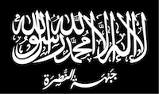
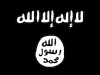

Introduction to the Conflict

The conflict in Syria began in 2011 during the popular uprising now known as the Arab Spring. During this revolutionary period many Islamic Countries, including Tunisia, Libya, Egypt, erupted in protests against thier tyranical rulers. These protests relied on powerful social media and images, like the one seen above, in order to capture the worlds attention Several of these protests successfully ousted their leaders with little or no bloodshed. However, others, like Syria erupted into a full blown and devastating civil war

In Syria the protests began as a way to oust the brutal regime led by Bashar al-Assad. Protests, like in many other contries, began peacefully. However as the protesters gained momentum the regime responded with violence. Often when a regime makes war on its own people the international community will step in and attempt to broker peace. In syria this was not possible. Thus, The population of Sryia felt as though they had no choice, but to fight back against the Assad regime.
the BBC has done a fantastic job reporting on the conflict. A particularly comprehensive article can be found here
Escalation and the Combatants

As the civil war escalated several separate and competing groups rose to power in Syria. The above map outlines the frontlines of the conflict as well as the most powerful combatants involved. You can see that the conflict is highly complex with alliances forming and disentigrating every month. Unfortunately, for american interests, the formerly prominant but poorly funded and equipped Free Syria Army, a group which advocated for democracy and secular living, has been all but destroyed as more extremist groups join the conflict. Below I will detail the situtatioin in regards to each of the combatants
The Assad Regime
The Assad regime is the former government of Syria. It was run by the dictator Bashar al-Assad. The protests of during the Arab spring frightened the dictator and his loyal subjects so much that violent means were used to repress the protesters. These fears were spurred on by the fact that Assad is a member of the Alawite sect of islam, which is a minority in the region and therefore could be persecuted violently if their regime should fall out of power. Thus the regime feels it is fighting a war of survival and have employed horrific weapons against the citizenry of Syria. The regime, seen in red in the map above, controls large swathes of western syria including major popualtion centers. Most of these population centers are contested by rebels as well and are therefore sites of major conflicts. The regime enjoys the tactical advantages of superior technology, like a powerful airforce and strong backing by Russia, this allows them to survive against superior numbers and the fanatical motivation of their opponents.
Al Nusra Front
Al Nusra is an al Queda affiliate that rose to power during the syria civil war. On the above map it and other rebel forces are represented in green. The Al Nusra front is an extremist islamic group that is dedicated to eradicating the Assad regime and establishing and islamic state in Syria. They have formed alliances with many of the other more moderate rebel groups, including the remnants of the Free Syria Army. For a comprehensive inside look on the Al Nusra front I encorage you to view the VICE news story below. The VICE team has done an incredibly job getting insider footage on the secretive group. WARNING: the video is graphic! Click here to view
The Islamic State
The Islamic State has been heavily featured in the news recently and has even prompted a coalition of nations to begin a bombing campaign in the region. This is because the Islamic state is known for their incredibly harsh rule and brutal treatment of anyone who does not share their ideology. IS has also spread into iraq destroying a well equipped and US trained iraqi army. They have also began spreading around the world. Formerly and Al Quaeda branch, like the Al Nusra front, the IS led by Abu Bakr al-Baghdadi has since split from Al Queda and become one of the most powerful terror groups even known. They currently control large parts of Iraq and Syria and are at war with all the other combatants. the Ultimate goal of IS is to extablish an islamic caliphate. Their Syrian territories can be seen in black on the above map. VICE news has also done an incredible expose on ISIS. Where they have actually managed to get footage of the IS capital in Raqqa and interviews with IS officals. WARNING: This video is graphic! Click here to view